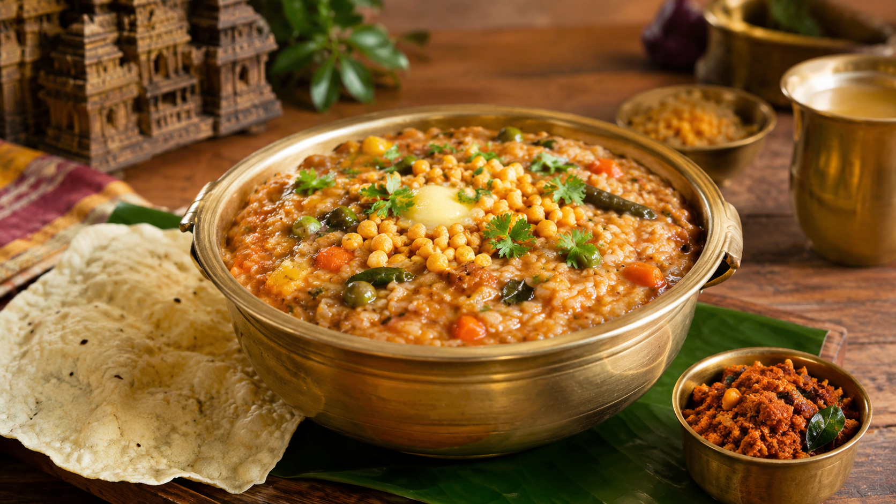

01
Potato Chips
Crispy potato chips add a delicious crunchy contrast to the soft and flavorful Bisibele Bath.

A flavorful Karnataka rice and lentil dish prepared with vegetables, spices and aromatic spices.
Bisibele Bath is a traditional Karnataka dish made with rice, lentils, vegetables and a distinctive blend of spices. It is a comforting and flavorful meal enjoyed across Karnataka.
Bisibele Bath is commonly enjoyed with traditional accompaniments that add texture and flavor to the meal.
Crispy potato chips add a delicious crunchy contrast to the soft and flavorful Bisibele Bath.
Crunchy boondi is often enjoyed alongside Bisibele Bath for an extra layer of texture.
Cool curd provides a refreshing contrast to the warm and spiced Bisibele Bath.
Explore local places where you can enjoy traditional Karnataka food in Kolar.
📍 Kolar, Karnataka
Enjoy traditional Karnataka food and local dishes in a comfortable setting.
📍 Kolar, Karnataka
A local dining option serving traditional Karnataka-style meals.
📍 Kolar, Karnataka
A local spot where visitors can experience traditional South Indian cuisine.
Bisibele Bath is part of Karnataka's rich food culture and can be enjoyed as part of traditional meals in and around Kolar.